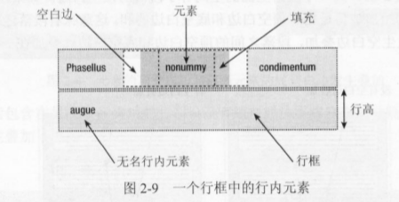
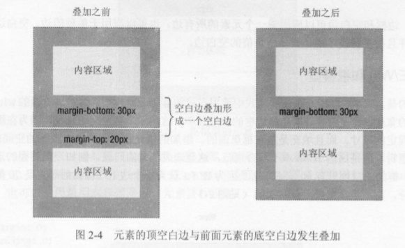
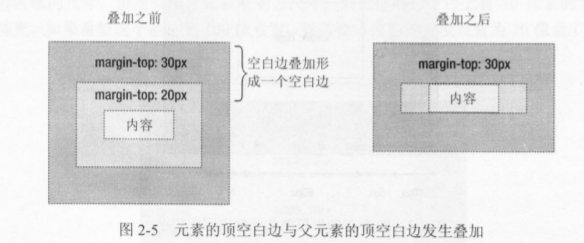

css笔记
Table of Contents
三种引用css的方法
<!-- 外部样式表 --> <link rel="stylesheet" href="/static/css/your.css" type="text/css" media="screen" /> <!-- 内部样式表 --> <style type="text/css" media="screen"> p { color:red; font-size:12px; } </style> <!-- 行内样式表 --> <p style="color: red; font-size: 12px;"></p>
优先级
很多时候可能有多个css规则来指定一个元素的属性,这是需要从中选出一个优先级最 高的规则(不是后面的规则覆盖前面的规则).
- !important: 优先级最高,但不提倡使用, 如果都是或者都不是 !important 样式那 么检查规则2.
- 用style编写的规则(行内样式)总是优先于除1以外的其它规则, 如果都是或者都不 是行内样式那么检查规则3
- 具有id选择符的规则必定优先于没有id选择符的规则, 如果都有id选择符, 那么id 选择符数量多的优先级高, 如果id选择符的数量也相同那么比较规则4.
- 具有class选择符的规则必定优先于没有class选择符的规则. 如果都有class选择 符, 那么class 选择符数量多的优先级高, 如果class选择符的数量也相同那么比 较类型选择符和伪元素选择器.
因此在确定一个元素的css规则时就是依次检查上述1, 2, 3, 4条规则, 选出优先级最 高的css规则应用于该元素.下面举一些例子:
- #content a 比 .dropdown a 的优先级高,因为前者有id选择符
- #wrapper #content 比 #content .datepost 优先级高, 因为前者有两个id选择符.
css selector
p {color: red;} /*tag selector*/ body, ul, ol {} /*body,ul,ol标签, 有逗号就意味着平等*/ #nav {font-size: 12px;} /*id selector*/ .sidebar {font-family:Times} /*class selector*/ h1#content {} /*id为content的h1标签*/ h1.blue{} /*class为blue的h1标签*/ li a {text-decoration: none;} /*descendant selector*/ li > a{text-decoration: none;} /*和li a 的区别是这个只选择直接子节点(ie6不支持)*/ h1 + p{font-weight: bold;} /*h1后面的第一个p节点(h1和p应该是平级的,也就是二者是兄弟节点)*/ li #content{} /*li下所有id为content的标签*/ li .blue{} a:link {color: red} /*pseudo-class selector*/ a[title] {color: red} /*attribute selector 所有有title属性的a节点,不支持ie6及以下浏览器*/ a[href="http://www.baidu.com"] {color:red} /*所有href属性等于http://www.baidu.com的a节点*/ a[href^="http://www.baidu.com"]{color: red;} /*所有href属性以http://www.baidu.com开头的a节点*/ a[href$=".pdf"]{color: red;} /*所有指向pdf文档的a节点*/
伪类与伪对象
伪类:
| :link | a链接未被访问时的样式 |
| :hover | 对象在鼠标移上时的样式 |
| :active | 对象被用户点击以及被点击释放时的样式 |
| :visted | a 链接被访问后的样式 |
| :focus | 对象成为输入焦点时的样式 |
| :first-child | 对象的第一个子对象的样式 |
| :first | 对于页面第一页使用的样式 |
标准伪对象:
| :after | 设置对象之后的内容 |
| :before | 设置对象之前的内容 |
css box
基本解释
css的盒子模型：

注意当用width与height来设置块级元素的宽与高时,实际只是设置的content区域的宽 与高, margin,border,padding都是不考虑在内,所以这个宽与高不是元素实际占用的 宽与高, 这也就是margin，border，padding三个属性的含义了,这三个属性都有4个值， 比如如下代码
margin:25px 50px 75px 100px; margin-top: 25px; margin-right: 50px; margin-bottom: 75px; margin-left: 100px;
上述两段代码等价，指定四个值则依次为：上： 25px，右：50px，下：75px，左：100px。(T-R-B-L) 如果指定两个值，那么第一个是上下，第二个为左右，比如
margin: 0px auto;
那么上下是0px，左右会相等，也就是居中效果
margin的负值
这三个属性只有margin可以为负值，padding与border都不可以为负值，几个概念：
- box的物理大小：包括border， padding，content，不考虑margin
- box的实际大小：考虑margin
- 基准线：margin移动的基准线，
- top与left是以外元素(也就是紧邻的元素或者是父元素)为基准线，这两个值是用来确定本元素相对于外元素的位 置的，以top为例，大体可以认为 margin-top=本元素border-top的位置 - 外元素的下边界 ，比如margin-top=10px，那么本 元素的border-top的外置就会与外元素相隔10px，如果margin-top=-10px，那么本元素的border-top的位置就会 和外元素相距-10px，也就是说本元素的boerder-top在外元素边界的上方，那么就意味着本元素和外元素发生了 重叠
- right与bottom是以本元素作为基准线的，这两个值不会改变本元素的位置，但它会改变紧邻的右边或者是下边的 元素的位置，以right为例，可以认为 margin-right = 右边紧邻元素的左边界 - 本元素的border-right的位置 ，因 此如果magin-right=10px，那么右边元素就与本元素的border-right的位置相距10px，视觉上就是右边的紧邻元素 与本元素相距10px（不考虑右边元素的margin），如果margin-right = -10px，那么右边元素的边界就在本元素的 border-right的位置的左边，也就是说，右边元素与本元素发生了重叠
- box 的实际大小 = box 的物理大小 + 正的 margin， 也就是说负的margin值是不改变box的大小的，因为负的 margin会让本元素与紧邻的元素发生重叠
- 用更通俗的话来解释margin：如果margin为正值的时候，那么行为就和看到的图片中的一样，这里只讨论为负值
的情况：
- margin-top为负值，那么把本元素向上移动
- margin-left为负值，那么把本元素向左移动，比如在实现选项卡时，使用margin-left：-1px，可以避免显示 两条边界
- margin-right为负值，那么将紧邻的右边元素向左移动
- margin-bottom为负值，那么把紧邻的下边元素向上移动
框类型
网页中的任何元素都可以看作是在某种框中, 框的类型有:
- 块框: 块级元素, 比如 p,div, h1~h6, ul 默认创建块框.
- 行内框: 行内元素, 比如 a, img, span, strong 默认创建行内框.
可以通过display属性来修改框类型, 比如对 a 使用 display:block 就可以把它
变成一个块框.
行内元素显示为一个 行内框 , 而页面中的一行文本可以看做是一个 行框, 多个*
行内框* 包含在一个 行框 之中, 可以设置 行内框 的左右margin, 左右border,
左右padding, 但是 设置上下 margin, padding 却不会影响行框的高度, 如果要设
置行内框的上下padding, margin同时又要自动改变行框的高度, 那么可以使用
display: inline-block, 一般使用 line-height 来改变行框的高度. 行内框的上下
border可以设置, 这在有时候需要制作一些下划线效果时特别有用(text-decoration
可以设置删除线,下划线等等,但它的颜色不能设置, 而且只能用实线, 不灵活).

如果行框在一个浮动框的旁边, 那么行框会自动缩短来给浮动框留出空间.
display
- block: 块级元素, 默认一个元素占一行, 会产生块框
- inline: 行内元素, 会产生行内框.
- inline-block: 和 inline不同的是: 它如果设置了上下 padding, margin会自动 撑大行框的高度, 这在设计一些行内的按钮时特别有用, 和 block 不同的是 inline-block 元素不会另起一行.
上下margin叠加问题
关键点是: 如果两个 margin 上下紧挨着, 那么最终的margin 不是二者的和, 而是二 者中较大的一个, 也就是上下margin发生叠加, 注意只在普通文档流有效,如果其中 任何一个元素使用了浮动, 绝对定位, 那么上下 margin不会叠加..
- 当两个对象是上下关系, 很显然上方对象的 margin-bottom 和下方对象的
margin-top 是紧挨着的, 那么最终的margin 是二者中较大的一个,而不是二者的
和.

这是为了兼顾排版时第一个段落而做的设计，因为如果是和的话，那么第一个段落 的上边距和下面的段落会不一致.
- 当一个元素包含在另一个元素中时, 如果外部元素的上下padding, border设为0,
那么外部元素的margin就会和内部元素的margin上下紧邻, 因此也就会和内部元素
的margin发生叠加

这种情形比较诡异, 因为会导致内部元素有时候会影响外部元素的行为. 比如如果 外部元素的 margin-top 为0, 内部元素的margin-top为20px, 那么最终外部元素 的 margin-top也会变成 20px. 这会使你应用在外部元素上的背景在那20px的 margin上无效, 修复的主要方法是对外部元素使用 1px的padding或者border.
IE6 的左右margin加倍
当盒对象浮动时,IE6自动将盒对象的左右margin加倍,可以使用 display:inline 来
消除这个影响. 因此如果要兼容ie6, 只要是浮动对象,那么都应该设置
display:inline.
css定位
css有3中主要的定位方式: 普通文档流, 浮动, 绝对定位
普通文档流
普通文档流中各个块级元素根据出现html中的位置由上到下排列.
绝对定位
绝对定位与相对定位(position属性)
- static: 默认的值
- absolute:相对于父元素(top, left, right, bottom),绝对定位的元素离开文档流， 而飘在文档流的上方，注意绝对定位的父元素是这样确定的：在该元素的所有父元 素中查找，如果找到了设置position(只要不是static, 可以为absolute，relative， fixed)的元素，那么这个元素就是绝对定位的父元素，如果没有找到那么就是html 的body元素是绝对定位的父元素, absolute与float混用时,float会无效,也就是 float对绝对定位的元素无效果
- relative: 相对于元素的原始位置而言,其原始占位信息依然存在，比如下面的代码：
#div-1 { position:relative; top:20px; left:-40px; }
那么div-1就会相对于原位置向下偏移20px，向左偏移40px(注意负值), 相对定位, 如果添加float,那么元素先浮动,然后根据浮动得到的位置进行相对定位
- fixed: 相对于浏览器窗口, 设置该值意味着不管如何滚动元素都会固定显示在浏览 器窗口的同一个位置, IE6不支持.
- top, right, left, bottom: 这四个属性是用来确定元素的位置， 注意top right left bottom属性只对设置了position(absolute, relative, fixed)的对象有效 这四个属性都可以设置负值，比如top = -10px ，那么元素就是向上移动10px，如 果为正值就向下移动，其它的3个选项依次类推, 这四个属性的默认值是元素本来 位置.
浮动定位
浮动的基本原理
html文档有一个标准文档流，每一个块级元素(如div, p)都要单独占一行1

如果给一个元素添加浮动，那么他就会脱离标准文档流，而悬浮于标准文档流之上:

这是给div2,div3添加左浮动后的效果，因为div2,div3添加了浮动，所以二者脱离 标准文档流，那么div4就会上移，因为div1没有浮动，所以div2在div1的下方（不 是div1的右方），div3浮动所以跟在div2的后面。
clear
clear:left意思是本元素的左边不能有浮动元素clear:right意思是本元素的右边不能有浮动元素clear:both意思是本元素的左边, 右边都不能有浮动元素
浮动的注意事项
浮动元素是不占据空间的
如果一个 没有浮动的父元素 包含的所有子元素都是浮动的,那么这个父元素的实 际大小是 0, 而不是各个子元素大小的和(如果父元素也浮动了, 那么父元素的大小 是子元素的和), 直观上的印象就是父元素没有被子元素撑开, 所以如果要该父元素 包含浮动的子元素, 那么有四种解决方案:
- 可以在父元素的最后添加:
<div> ... <div> style="clear:both;"</div> </div>
这种方案的缺点是要添加无意义的 html 元素.
- 可以使用after 伪对象(ie6不支持):
<style type="text/css" media="screen"> .clearfix:after{ content: "."; height: 0; visibility: hidden; display: block; clear: both; } </style> <div class="clearfix"> ... </div>
after伪类会自动向元素的末尾添加content指定的内容, 然后通过设置 height, visibility 来将它隐藏,这么做的好处是不用在html中添加额外的空div, 但是 ie6支持不好.
- 将父元素浮动,但是这样会影响父元素下面的元素,所以可以给父元素下面的元素
添加
clear:both, 这种方法是兼容性较好的做法. - 将父元素的 overflow 设为 hidden 或者 auto. 因为应用值为 hidden或者auto 的overlow元素会自动清理包含的浮动子元素, 但是设置overflow会改变元素的显 示方式,所以也不是任何时候都有效.
css的常用属性
foreground color
p { color:red; } body { color:rgb(50, 255, 0); }
background
背景实际是设置盒子模型的 content以及padding区域的背景(也就是border以内的 区域), 不影响 margin区域的背景,依次有以下几个属性:
- background-color: 背景颜色,使用十六进制或者rgb是最好的,不要使用颜色名, 也可以设置为transparent, 这是默认值,但是有时父元素设置了背景颜色, 那么 就可以用它来恢复透明.
- background-image: 背景图片, 背景图片总是在背景颜色的上面.
- background-repeat: 图片的平铺方式[repeat, no-repeat, repeat-x, repeat-y],默认是repeat,也就是完全平铺
- background-attachment: 背景图片的滚动方式[fixed, scroll], scroll是默认 值，也就是说默认如果背景图片在窗口的左上角，那么如何向下滚动页面，那么 该背景图片就会跟着左上角的内容消失，如果是fixed，那么背景图片无论你如 何滚动，都会在窗口的左上角,该属性较多的用于body的背景设置，其它元素基 本不用
- background-position: 图片定位方式,分别为x与y坐标, x,y的值可以是left，
right， center，bottom,可以是百分比，也可是像素值，当你指定两个像素值
(x, y)时，意思就是说，把背景图片的左上角移到(x,y)(注意浏览器文档左上角
的坐标为0,0)，x, y可以为负值, 比如:
background-position: -2px -49px意思就是将背景图片向左移动2px, 向上移动49px,利用负值可以把多个背景图片 集合成一张图片,节省http请求次数,也使代码更容易管理(也就是所谓的 css Sprites ):
#content { background-color:rgb(220, 220, 220); background-image: url('sample.png'); background-repeat:no-repeat; background-position: 20% 20px; } #content { background: rgb(220, 220, 220) url('sample.png') no-repeat 20% 20px; }
可以用background 来简写,简写时属性依次为: background: [color] [image] [repeat] [attachment] [position]
列表相关
| 属性 | 说明 | 可能值 |
|---|---|---|
| list-style | 简写 | |
| list-style-image | 设置图片作为项目符号 | [none, url] |
| list-style-position | 项目符号的放置位置 | [inside, outside] |
| list-style-type | 设置项目符号的默认样式(圆圈, 罗马数等等) | [none, disc, circle…] |
字体相关
| 属性 | 描述 | 可用值 |
|---|---|---|
| font | 缩写，[style, variant, weight, size, line-height, font-family] | |
| color | 字体颜色(前景色) | 颜色(rgb或者十六进制值) |
| font-family | 字体 | 字体名 |
| font-size | 字体大小，注意em是个相对单位，1.5em是相对于本行的其他文字大小的1.5倍，比使用px有优势，因为如果你修改了本行其它文字的大小，那么1.5em也会相应的变大 | |
| font-style | 文字样式 | [normal, italic, oblique] |
| font-weight | [bold, normal], 加粗与不加粗 | [normal, bold, bolder, lighter…] |
| text-decoration | 文本下划线, [none, overline(上划线),underline(下划线), line-through(删除线)] |
段落样式
- line-height： 行高 [normal, length], 因为
line-height会 自动使文本垂 直居中, 所以有时用它来代替height与padding-top属性来实现垂直居中效果, 同 时 将height与line-height设为相同值是好的做法. - text-indent: 对象中 首行文字的缩进 [normal, length], 比如给一个
a链 接设置一个背景icon, 那么就可以使用text-indent来使链接文本后移, 避免覆盖 到背景icon上,当然这种效果也可以用 padding-left来实现. text-indent 可以 为负值, 有时候为了让文本从屏幕上消失, 会将 text-indent 设置绝对值非常大 的负数, 比如 -1000em. - text-overflow：当对象中的文字超过对象宽度时可以设置省略号[clip,
ellipsis], 只有设置了
word-break:keep-all才有效. - vertical-align: 对象中内容的垂直对齐的方式[middle, top, bottom…], 在设
计网站logo时, 有时需要图片与文本对齐, 这时可以使用
vertical-align: middle也就是中线对齐. - text-align: 对象中的文本的对齐方式[left, right, center, justify]
- word-break: 当一个单词非常长以至于超过了对象的宽度时如何处理[normal, keep-all, break-all]
- word-warp: 内容超过元素的宽度时，break-word会换行 [normal, break-word]
- overflow: 如果内容超过了容器的宽高,如何显示.[visible,auto,hidden, scroll] 如果设置为 hidden 或 auto 那么会自动的清理包含的任何浮动元素.
链接样式
几个有用的伪类
- a:link 链接未访问时
- a:visited 链接访问过时
- a:hover 鼠标移到链接上时
表单设计
输入框(input text)
一般设置这样几个属性:
line-height: normal: 这样设置后,如果改变字体大小那么输入框的高度会跟着 改变.font-size: 设置为合适的大小padding: 6-10px 基本就够了border: 设置1px的border, 这样可以去掉默认的那个丑丑的阴影- 设置宽度
- 使用css3 来设置阴影与圆角(自由发挥)
css编写的一些规则
id的使用场景
- 对页面进行布局时, 可以对每一个区域(div)定义一个 id, 这样可以使文档结构更 清楚.
- 样式只使用一次，比如logo
- 对网页中特定区域进行布局，比如header，sidebar等等
class的使用场景
- 同一页面多次使用
- 通用且经常使用的元素
- 多个class属性
命名
- css大小写敏感，建议小写
- 命名时建议用 - 来分割多个单词
- 对于class可以使用适当的前缀，比如字体 f-， 按钮 btn-
html5与css3
css3边框
border-radius => 圆角
border-radius是四个属性的简写(T-R-B-L),border-top-radius，right，bottom，left与之类似
div { border:2px solid; border-radius:25px; -moz-border-radius:25px; /* Old Firefox */ }
添加圆角
box-shadow => 添加阴影
box-shadow: 10px 10px 5px #888888; -moz-box-shadow: 10px 10px 5px #888888; /* 老的 Firefox */
第一个10px是水平阴影，第二个10px是垂直阴影，第三个5px是模糊距离，第四个是阴影颜色.
border-image => 边框图片
border-image 是border-image-* 的简写
div { border-image:url(border.png) 30 30 round; -moz-border-image:url(border.png) 30 30 round; /* 老的 Firefox */ -webkit-border-image:url(border.png) 30 30 round; /* Safari 和 Chrome */ -o-border-image:url(border.png) 30 30 round; /* Opera */ }
css3背景
css3文本效果
text-shadow => 文本阴影
和box-shadow类似
h1 { text-shadow: 5px 5px 5px #FF0000; }
word-wrap => 可以对太长的单词进行换行
transform => 2D，3D转换
- 2d转换
matrix(a,b,c,d,tx,ty) 定义 2D 转换，使用六个值的矩阵。 translate(x, y) 定义 2D 转换，沿着 X 和 Y 轴移动元素。 translateX(n) 定义 2D 转换，沿着 X 轴移动元素。 translateY(n) 定义 2D 转换，沿着 Y 轴移动元素。 scale(x, y) 定义 2D 缩放转换，改变元素的宽度和高度。 scaleX(n) 定义 2D 缩放转换，改变元素的宽度。 scaleY(n) 定义 2D 缩放转换，改变元素的高度。 rotate(angle) 定义 2D 旋转，在参数中规定角度。 skew(x-angle,y-angle) 定义 2D 倾斜转换，沿着 X 和 Y 轴。 skewX(angle) 定义 2D 倾斜转换，沿着 X 轴。 skewY(angle) 定义 2D 倾斜转换，沿着 Y 轴。 几个示例代码：
- matrix: 这个是所有2d变换的基础，其他的基本都可以用这个属性来实现，所以
其它的比如skew，translation都可以看作是matrix的简写，下面来讨论matrix
的原理：
transform的变换实际就是一次坐标变换，也就是待变换的元素中的每一个点 (x,y)都通过一个变换得到一个新的坐标(x1, y1),然后该点就在(x1,y1)处显示 出来，所以关键就是(x, y) => (x1, x2)的变换过程:
\begin{equation} \left( \begin{array}{ccc} a & b & tx \\ c & d & ty \\ 0 & 0 & 1 \end{array} \right) \times \left( \begin{array}{c} x \\ y \\ 1 \end{array} \right) = \left( \begin{array}{c} x2 \\ y2 \\ 1 \end{array} \right) \end{equation}一个3×3的矩阵 乘以 3×1的矩阵结果是一个3×1的矩阵，所以:
x2 = ax + by + tx y2 = cx + dy + ty 1 = 1
这就是(x, y) => (x1, y1)的变换规则,如果a=d=1, b=c=0， 那么就变成了 translate(tx, ty)
- translate：根据坐标从当前位置移动
div{ transform: translate(50px,100px); -ms-transform: translate(50px,100px); /* IE 9 */ -webkit-transform: translate(50px,100px); /* Safari and Chrome */ -o-transform: translate(50px,100px); /* Opera */ -moz-transform: translate(50px,100px); /* Firefox */ }
- matrix: 这个是所有2d变换的基础，其他的基本都可以用这个属性来实现，所以
其它的比如skew，translation都可以看作是matrix的简写，下面来讨论matrix
的原理：
- 3d转换
| matrix3d(n1,n2,n3, … n16) | 定义 3D 转换，使用 16 个值的 4x4 矩阵。 |
| translate3d(x,y,z) | 定义 3D 转化。 |
| translateX(x) | 定义 3D 转化，仅使用用于 X 轴的值。 |
| translateY(y) | 定义 3D 转化，仅使用用于 Y 轴的值。 |
| translateZ(z) | 定义 3D 转化，仅使用用于 Z 轴的值。 |
| scale3d(x,y,z) | 定义 3D 缩放转换。 |
| scaleX(x) | 定义 3D 缩放转换，通过给定一个 X 轴的值。 |
| scaleY(y) | 定义 3D 缩放转换，通过给定一个 Y 轴的值。 |
| scaleZ(z) | 定义 3D 缩放转换，通过给定一个 Z 轴的值。 |
| rotate3d(x,y,z,angle) | 定义 3D 旋转。 |
| rotateX(angle) | 定义沿 X 轴的 3D 旋转。 |
| rotateY(angle) | 定义沿 Y 轴的 3D 旋转。 |
| rotateZ(angle) | 定义沿 Z 轴的 3D 旋转。 |
| perspective(n) | 定义 3D 转换元素的透视视图。 |
- matrix3d的规则也类似于matrix，只是这里是一个4×4的矩阵乘以一个4×1的矩阵结果是一个4×1的矩阵
transition (IE9及以下版本无效)
不使用js的情况下，或者从一种样式变为另一种样式的动画效果
div{ transition: width 2s; -moz-transition: width 2s; /* Firefox 4 */ -webkit-transition: width 2s; /* Safari 和 Chrome */ -o-transition: width 2s; /* Opera */ }
当宽度属性变化时就会有一个2s的动画
sass
- sass中可以嵌套的定义规则
/* style.scss */ #navbar { width: 80%; height: 23px; ul { list-style-type: none; } li { float: left; a { font-weight: bold; } } } /* style.css */ #navbar { width: 80%; height: 23px; } #navbar ul { list-style-type: none; } #navbar li { float: left; } #navbar li a { font-weight: bold; }
- 父引用: 用 & 代替父选择子
/* style.scss */ a { color: #ce4dd6; &:hover { color: #ffb3ff; } &:visited { color: #c458cb; } } /* style.css */ a { color: #ce4dd6; } a:hover { color: #ffb3ff; } a:visited { color: #c458cb; }
- 变量：$main-color: #ce4dd6; 该语句就定义了一个名为main_color的变量，引用时使用$main_color
- 插值：使用#($var)
/* style.scss */ $side: top; $radius: 10px; .rounded- { border-#{$side}-radius: $radius; -moz-border-radius-#{$side}: $radius; -webkit-border-#{$side}-radius: $radius; }
- mixin: 可以看作是自定义函数，通过@include并且在函数名后跟上实参来进行调用
/* style.scss */ /* $radius 指定了默认值10px */ @mixin rounded($side, $radius: 10px) { border-#{$side}-radius: $radius; -moz-border-radius-#{$side}: $radius; -webkit-border-#{$side}-radius: $radius; } #navbar li { @include rounded(top); } #footer { @include rounded(top, 5px); } #sidebar { @include rounded(left, 8px); }
- @import:导入文件，注意被导入的文件应该命名为 partial_filename.sass, 这样导入的时候就用 @import "filename" 为了支持sass与scss，在@import后不要指定后缀名